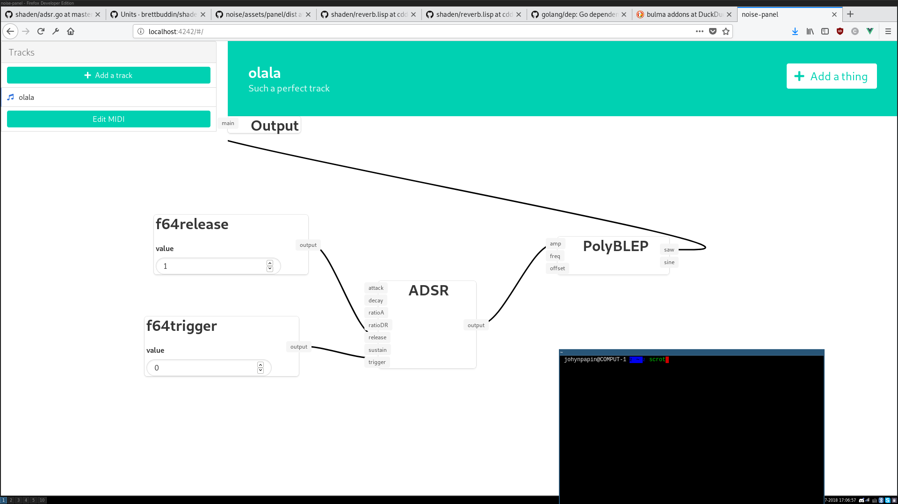
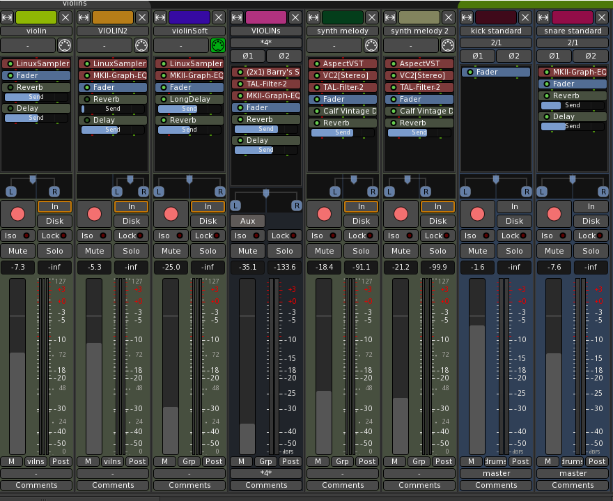

NOISE - Partie 1 - La polyphonie.
Bonjour lectrice, lecteur. Dans ce premier article d’une série qui je l’espère sera intéressante je vais vous présenter NOISE et quelques choix que j’ai dû effectuer.
J’aime la musique. J’aime aussi programmer. Mais jouer de la musique et programmer, ça prends du temps. Beaucoup de temps. Alors que faire ? La solution que j’ai trouvé, c’est de faire les deux en même temps. J’ai donc décidé de faire de la musique électronique en programmant moi-même tout ce dont j’ai besoin. C’est ça, NOISE (Noise Orchestrator Is Super Enjoyable).
Tous les grands projets commencent comme ça :
> nvimEt comme nom : NOISE (Noise Orchestrator Is Super Enjoyable)
C’est un projet très intéressant pour moi pour plusieurs raisons :
- Améliorer mes compétences en programmation
- Apprendre le DSP (Digital Signal Processing), c’est-à-dire comment traiter des signaux (ici, de l’audio)
- Apprendre le fonctionnement des synthétiseurs et des logiciels audios en général
- Découvrir la programmation en temps réel (on va le voir, il faut être rapide)
Je me rend compte maintenant que c’est probablement le projet le plus ambitieux que je n’ai jamais commencé. En effet, très vite les problèmes ont commencés à apparaître. J’ai dû me rendre à l’évidence : ça n’allait pas être facile. Pas du tout.
Dans cet article je vais présenter l’un deux : la polyphonie.
L’apparition du problème
Quand j’ai commencé a développer, je me suis inspiré des synthétiseurs modulaires. L’idée était de pouvoir créer des instruments en reliant des modules (générateur, filtre…). Ensuite, je voulais pouvoir créer des boucles en jouant sur mon clavier maître.

Ça fonctionnait bien. J’étais très content de moi : j’avançais vite.
C’est alors que je décide d’ajouter le support des périphériques MIDI (Musical Instrument Digital Interface) pour pouvoir jouer des sons avec mon super clavier maître.
J’ai donc programmé ça en utilisant les librairies github.com/gomidi/midi et github.com/rakyll/portmidi (la première librairie a été mise à jour et est devenue beaucoup plus simple à utiliser depuis).
Pour faire le lien avec le « patch » (c’est-à-dire une des configurations du synthétiseur modulaire), j’ai rajouté un module « d’entrée » qui fait passer la fréquence de la note a jouer à l’instrument (le patch). Ainsi, quand j’appuyais sur une touche du clavier maître le signal MIDI était transformé en fréquence puis envoyé par ce module « d’entrée » à un patch (instrument si vous préferez : une configuration possible d’un synthétiseur modulaire). Ce patch traitait alors la fréquence puis produisait un signal audio. Quand la note s’arrêtait, le son était coupé.
Je ne m’en étais pas encore rendu compte, mais je venais de réaliser une erreur fondamentale : un synthétiseur modulaire n’a pas besoin de notes pour faire du son, c’est tout le principe. Il peut en utiliser, mais il ne doit pas en avoir besoin. Or, avec ce que je venais de faire, le synthétiseur ne pouvait plus produire de son si aucune note n’était envoyée au module « d’entrée ».
Ignorant cela, je commence a jouer mais… Malheur. Je ne peux jouer qu’une note à la fois ! Mince… Peut-être qu’il existe une formule simple pour calculer une « fréquence moyenne » entre n notes ? Bien sûr que non.
La polyphonie, c’est ça : pouvoir jouer plusieurs notes en même temps.
Zut
Ce problème n’est pas seulement valable pour les notes au sein d’un même instrument (patch), mais aussi pour mixer plusieurs instruments entre eux. Pour bien expliquer le problème, je dois expliquer comment le son est produit puis envoyé aux haut-parleurs dans NOISE.
La librairie qui est au cœur du système est PortAudio et ses bindings pour le langage Go github.com/gordonklaus/portaudio.
Cette librairie permet de créer des programmes qui vont être capable d’accéder aux interfaces audio sur des tas de plateformes différentes (LINUX, Windows…).
Le principe est simple : il faut écrire un callback, c’est-à-dire une fonction qui va être passée en paramètre à PortAudio. Cette fonction va être ensuite appelée quand il faudra que NOISE produise du son. C’est là que ça commence à se corser : il faut être rapide. Si jamais on ne calcule pas les signaux audio suffisamment rapidement, PortAudio va être obligé d’envoyer des données aléatoires aux haut-parleurs. Concrètement, ça va s’entendre pas des claquements dans le signal audio.
Ça signifie qu’il faut limiter les appels systèmes (déclaration de variables, utilisation de verrous…).
Voici le callback de NOISE au moment où j’écris ces lignes :
func (p *Player) processAudio(out [][]float32) {
if p.Processor == nil {
return
}
frame := p.Processor.ProcessFrame(len(out[0]))
var tmp float32
for i := range out[0] {
tmp = float32(frame[i])
out[0][i] = tmp
out[1][i] = tmp
}
}
Concrètement, la fonction prends en paramètre un buffer qui contient des données aléatoires et doit les remplacer par un signal audio. Ces signaux sont en fait des nombres réels (0,42 par exemple) qui doivent être compris entre -1 et 1. Si on dépasse ces valeurs, on va parler d’overload : on va entendre des claquements.
Voici maintenant le problème :
Prenons deux signaux simples (des sinusoïdes) qui varient donc entre -1 et 1. Comment faire pour jouer les deux en même temps ?
Bêtement, on peut tenter de les additionner. Malheureusement non, ce serait trop beau. On risque d’arriver a des valeurs plus grandes que 1 ou plus petites que -1. Une solution est alors de diviser le résultat par 2.
Cette solution fonctionne, mais elle réduit d’autant le volume de chaque signal. Au début, c’est la solution que j’avais adopté. Mais, quand je jouais deux notes j’entendais immédiatement le volume diminuer. Ce n’est pas envisageable en vrai.
J’ai commencé a fouiller dans les forums, à regarder dans le code des autres logiciels. Mais je ne trouvais rien d’évident. La seule piste que j’avais, c’est que certains logiciels limitaient la polyphonie à un nombre arbitraire (par exemple 24).
J’ai compris que ces logiciels divisaient en fait les signaux par ce même nombre, peu importe le nombre de notes. Ainsi, tant que plus de 24 signaux ne sont pas joués, impossible de dépasser les bornes (-1 et 1). Le truc c’est que ça fait un son vraiment faible, et que ça me semblait moche.
La solution \o/
C’est il y a peu que j’ai finalement trouvé la solution :
Il n’y en pas !
Fichtre ! Pourquoi je viens de lire tout ça alors ?!
Pas de panique. Il faut en fait laisser l’utilisateur s’en occuper. C’est à ça que servent les mixeurs.

Cette interface que l’on retrouve dans la plupart des logiciels permet en fait de surveiller que l’overload dont nous parlions n’arrive pas. De plus, il permet d’ajuster le volume des instruments pour éviter qu’ils ne soient trop faibles.
Conclusion
Je tiens à rappeler que je ne suis pas du tout un ingénieur DSP. Je n’y connais rien du tout. Du peu que j’en ai vu, c’est un domaine vaste et passionnant, mais aussi et surtout très complexe. Peut-être que la solution que je propose dans cet article n’est pas du tout la bonne, et que je suis passé a côté de quelque chose. Si je trouve autre chose, j’en parlerais dans un prochain article. :-D